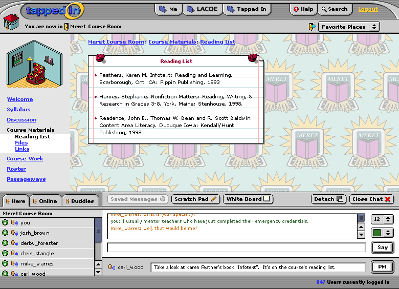
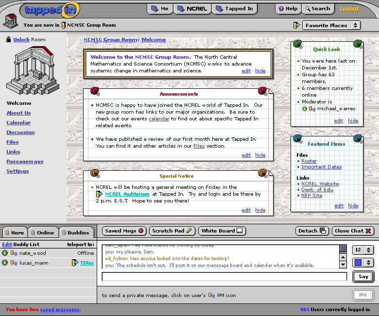
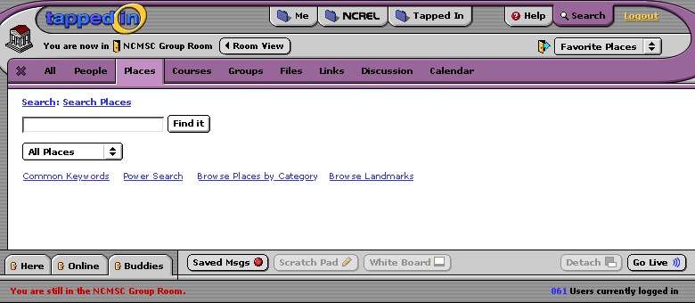

A good amount of the interface has changed since our last teleconference. These screens show two different room views. The first is a course room (an embedded course manager within the Tapped In world). Here, the user has drilled down into course materials and found the reading list. The "chat" window (more realistically called the "communication" window) has both a synchronous chat text field and a "private message" field (currently in use).
This second screen shows a different type of room: a group room. Notice the different options in the subnavigation bar running down the left side. Group rooms obviously have different functionality than course rooms. Because this user is an administrator, there are also more options available for editing the displayed content. This screen shows the "welcome" area, with customizable content set by the rooms moderator. Notice also in the chat window that private messaging is not being used, and the list of users is set to "buddies" rather than "here", showing the location of this user's favorite people.
This last image shows an example of a "content overlay" screen, where a user is still in a room, but is getting information outside of it. Also, notice that the chat interface has been collapsed here. The user will not be visible now to other users in the room.
Here are my notes (Patti) from the 12/10/01 morning phone conference.
Participants: Ann, Margaret, Gayle, Hoyet, Tammy, Jim, BJ, Zaz, Kevin, Judi, Mark, Patti
Overall folks seemed to really like it. A few suggestions below (some of these are already planned)
Remove bread crumbs now; they seem redundant with the navigation at the left which tells you where you are now. (Margaret) It interferes with the wall paper (can we have lighter wallpaper?) (Jim)
Folks really like the Chat + PM. Like that you can hide/show it, Really like ability to have chat at bottom and other work (including discussion board) above.
Wants input areas bigger when you detach (planned; Jim)
Give everyone their own private notepad in Me, need to think about how it will work and look (Margaret, Judi)
Want lightweight messaging to group, e.g., to be able to private message to ad hoc groups. could we support this in our buddy list editing interface, e.g., let users group their buddies and PM a group? (Hoyet, or Kevin?)
Buddy List has loaded connotation, not just people in your cluster/class. Only intentionally added names go in my buddies. E.g., If you want to PM your class or group, you can PM them from the class or group or info page. Or you can intentionally add them to your buddies and then PM from there. Do not automatically add group/course people to Buddies list if you join a group. (Gayle, Mark, everyone)
Want transcripts on room conversations saved in the room accessible only to the owner/instructor (as planned; Margaret)
Can you make the user tally at the lower right not have leading zeros, e.g., 93 instead of 093; less tech-driven, more human (Jim)
Have a library of room icons/wallpaper that room owners can select to set the mood/topic of the room/course (as planned; Jim)
individuals can have an individual office; course rooms can be paid for; groups users either get a set number (up to 3?) or apply for them
Folks prefer "Close door" over "lock door" (everyone)
Folks like the look of notes stuck on walls and ability to edit in place or hide.
Editing Quick Look would mean selecting or deselecting statistics you want to show. Suggest moving Features Items above Quick Look since it seems more important.
Consider adding one more kind of note: an Image note that just imports an image and displays with a picture frame (Ann, others agree) Also let folks import Quicktime movies.
Consider not letting the owner hide the welcome text; at least have that note permanent. Need space for organization's logo on the Welcome page, in addition to or beside the Welcome text.
Members given default amount of space for free (like 10 MB) and can buy space above that. Organizations can buy more too (Judi, Mark, Patti)
Can we link to other IM systems, like AIM, ICQ? Would be nice, but likely won't get to this in the first release (and may not be able to due to proprietary nature of these systems)
Final comments
---------------
Hoyet: big improvement; want more on the fly grouping support
Tammy: impressed, tremendous change; terrific
Jim: Wonderful way to see development process and contribute; want us to think more about the relationship between peoples interactions in this world and outside (e.g., integrating with other IM systems)
Margaret: like that I can look at newsgroups/discussion and chat at the same time! will really help integrated use of these tools to support class work.
Ann: like hearing all the perspectives; want us to consider every pixel precious and not be redundant, allow more individual branding through ability to add logos/images/etc.
Gayle: find it very visually appealing, not cluttered, lots of open space; will be neat to start using and see what really works and what doesn't
Kevin: Like the amount of functionality with clean interface; being able to integrate things that haven't been integrated before will be good. I'm still struggling with sense of place and getting comfortable with room metaphor and wallpaper, etc. Also interested in internationalization and support for other languages, e.g., sticky notes in non-Roman characters.